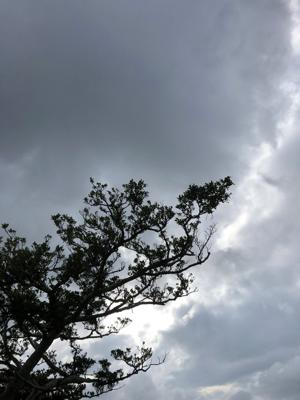
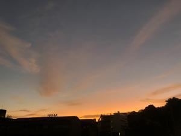
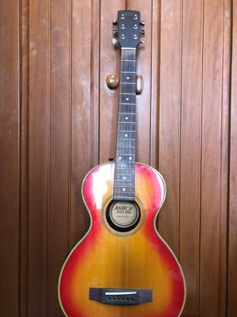
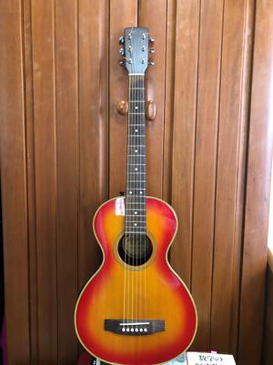

うるがいの話 ある日
最新: ギターの弦を替える【うるがいの話 ある日】とは 一日だけのプログです
『うるがいの話』の最新一日だけのプログで、通信料が少なく経済的だ。カニの画像をクリックすると全ての日付が載る『うるがいの話』サイトを表示します
|
|
【うるがいの話】 うるがい(ｳﾙｶﾞｲ urugai)とは、『もずくがに』の名前でとても大きくなります。 |
|---|---|
|
|
【カミマヤーの話】 猫のことを方言でマヤーといいます。カミマヤー（kamimayaa）とは、神の猫のことです。 |
|
【たながぁの音楽】 たながぁ（ﾀﾅｶﾞｰ tanagaa）とは手長えびのことで、何種類かあり大きいのは車 エビぐらいになります。 |

|
【ぶながぁの話】 ぶながぁ(ﾌﾞﾅｶﾞｰ bunagaa)とは、赤い髪の毛、赤い身体、そして身長は１ｍ２０ｃｍ ぐらい、川の蟹を食べているの目撃された。場所は沖縄県国頭郡大宜味村のと ある村僕の隣近所に住んでいる爺さんから、聞いた話です。 |
|
|
【ギーマの話】 ギーマ(giima)とは、山原の里山に咲くスズランに似た、 花を付けます。実は食べられます、 気が付くと口の周りが紫になっています。 |
2022年11月27日 (日）ギターの弦を替える
16:04
   
昨日、ギターを弾いていると、一番高い音が出る１弦（ いわくつきの弦で 子
供が中学生の時からのもの）が切れた。弦が錆ついてきたのに気づいていたが
朝から去年の５月に 買った弦 で付け替える。ネットで弦の交換の仕方を調べ
慎重に取り掛かる、そして問題の１弦、弦を巻くと・・・、あ！、切れた、ま
たか、と思ったが、弦を巻くペグから、外れただけだった。ほっとする、慎重
に慎重に弦を巻く。一時間半で作業終了、今回は６弦とも新品になった。それ
にしても１弦は大変だった。ところで、昨日眠たくなる専門書を、読んでいる
とギターの弦が書かれていた。音階といい、かなりのシンクロである。
『Jonny Ballの数学の歴史物語 古代エジプトから現代まで』より引用
第2章 史上初の2人の偉大な数学者
ピタゴラス・・その定理は本当は誰のものか？ 音楽と数学を結びつける
ギターを持ってきてどれか弦を爪弾いてみてほしい。次に、弦の真ん中二印を
付けてそこをネックに押し当て、再び爪弾いてみよう。２回目の音量は最初の
音程と同じだが、１オクターブ高い。その弦がドにチューニングされていたと
したら、弦を押さえていない状態では低いドが、真ん中を押さえたら１オクタ
ーブ高いドが出る。・・・・・・・・・・
弦楽器や管楽器や打楽器などどんな楽器でも、その音程は単純な数学で決まっ
ている。ピタゴラスはさらに、弦の張力を４倍（２倍）にすることでも音程が
１オクターブ上がると論じている。
１５時５６分 ビットコインの総資産 ￥６、７０４↓